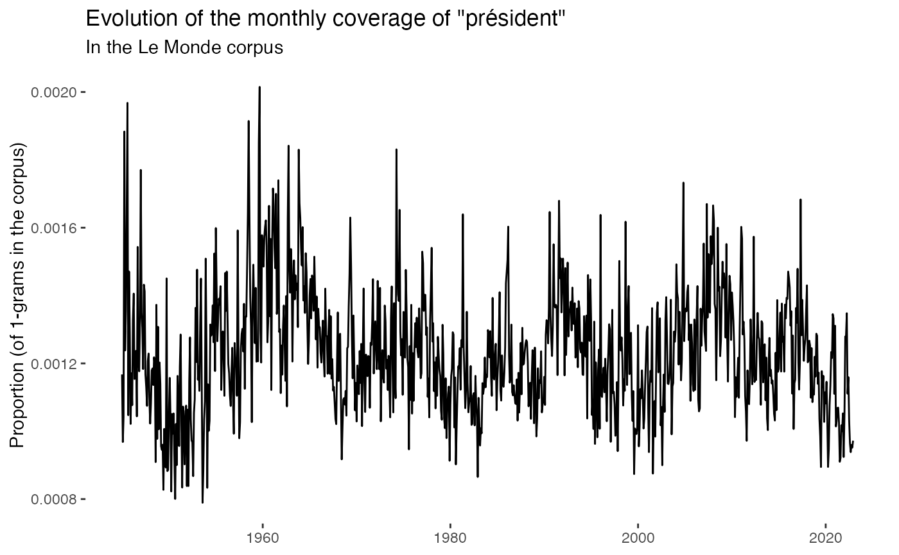
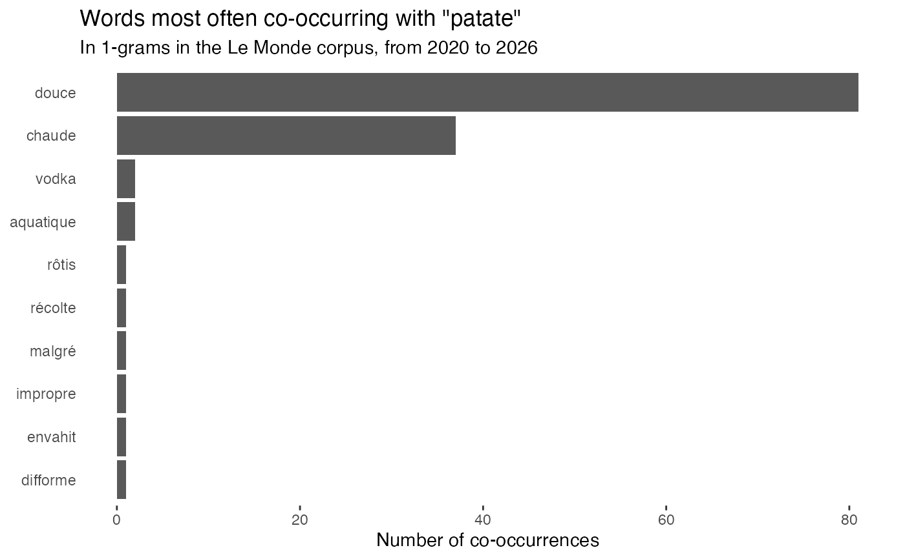

Automatically produces the relevant graph
gallicagraph.RdTakes as input data produced by one of the gallicagram,
gallicagram_coocur or gallicagram_associated
functions or their lexicon counterparts and
produces the corresponding base graph.
Arguments
- data
A data frame produced by one of the
gallicagram,gallicagram_coocurorgallicagram_associatedfunctions or their lexicon counterparts (or several of such data frames bound by rows).- color
A variable to set colors for the graph
- labels_color
A character string. The color in which to print the labels. Set to
NAfor no label.
Value
A graph describing the evolution of the proportion of (co-)occurrences of one or several keywords in one or several corpora.
Details
This function can also be combined with faceting by adding for instance
+ facet_wrap(~ keyword) after calling the function.
Examples
gallicagram("président") |>
gallicagraph()

gallicagram_cooccur("président", "ancien") |>
gallicagraph()
#> Warning: cannot open URL 'https://shiny.ens-paris-saclay.fr/guni/contain?corpus=lemonde&mot1=président&mot2=ancien&from=1945&to=2026&resolution=mois&count=True': HTTP status was '500 Internal Server Error'
#> Error in file(file, "rt"): cannot open the connection to 'https://shiny.ens-paris-saclay.fr/guni/contain?corpus=lemonde&mot1=président&mot2=ancien&from=1945&to=2026&resolution=mois&count=True'
gallicagram_associated("patate", from = 2020) |>
gallicagraph()
